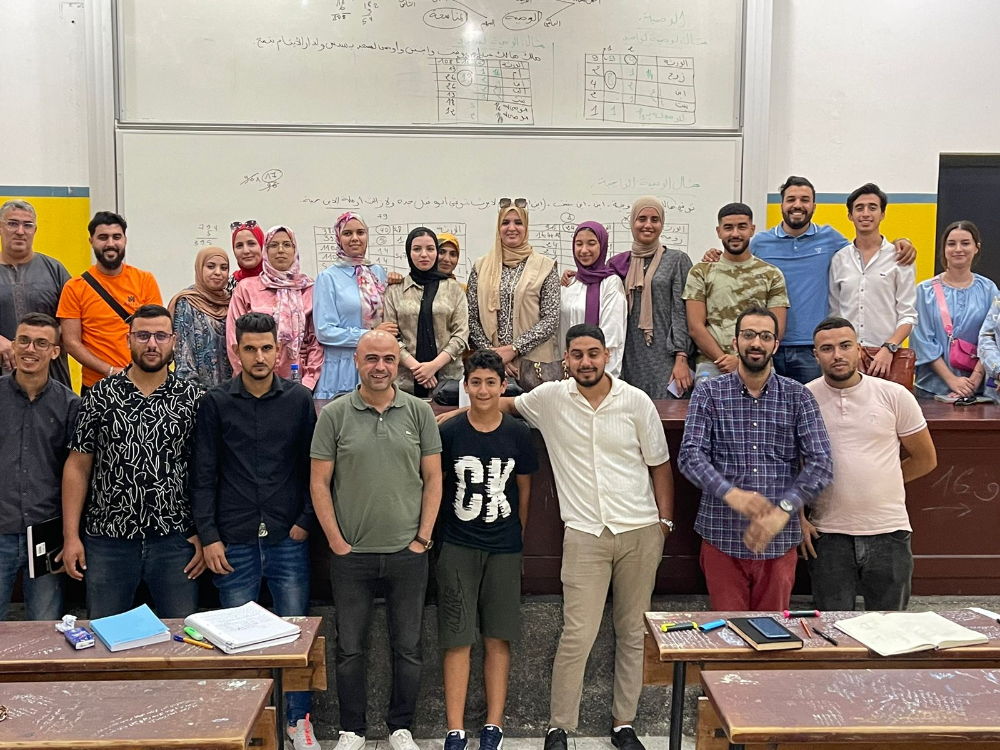
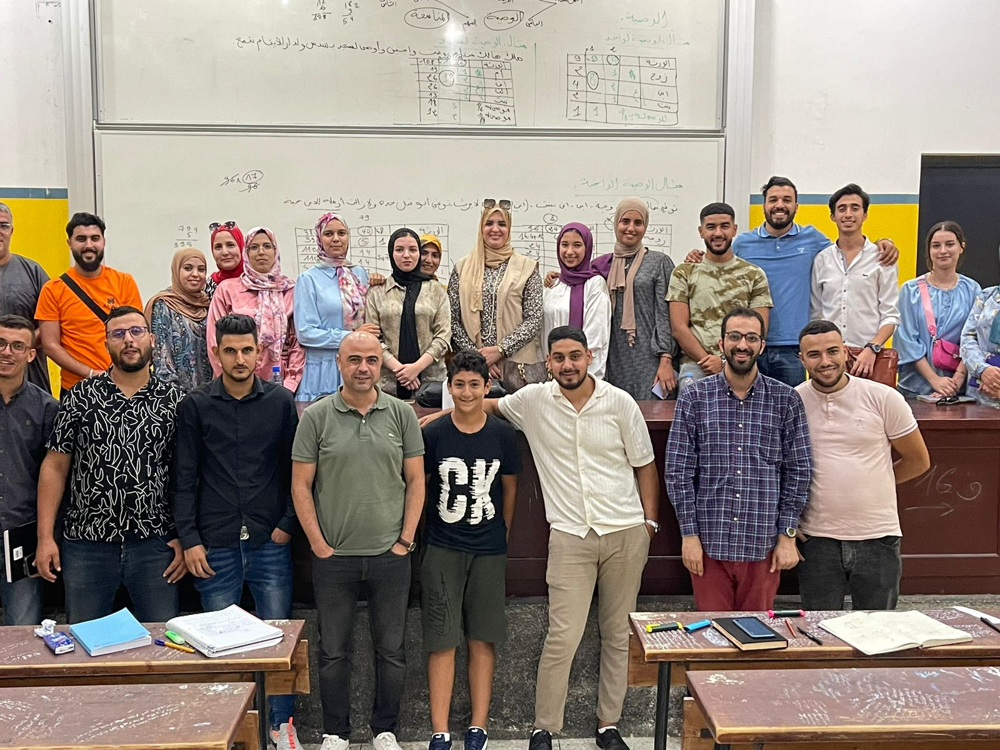
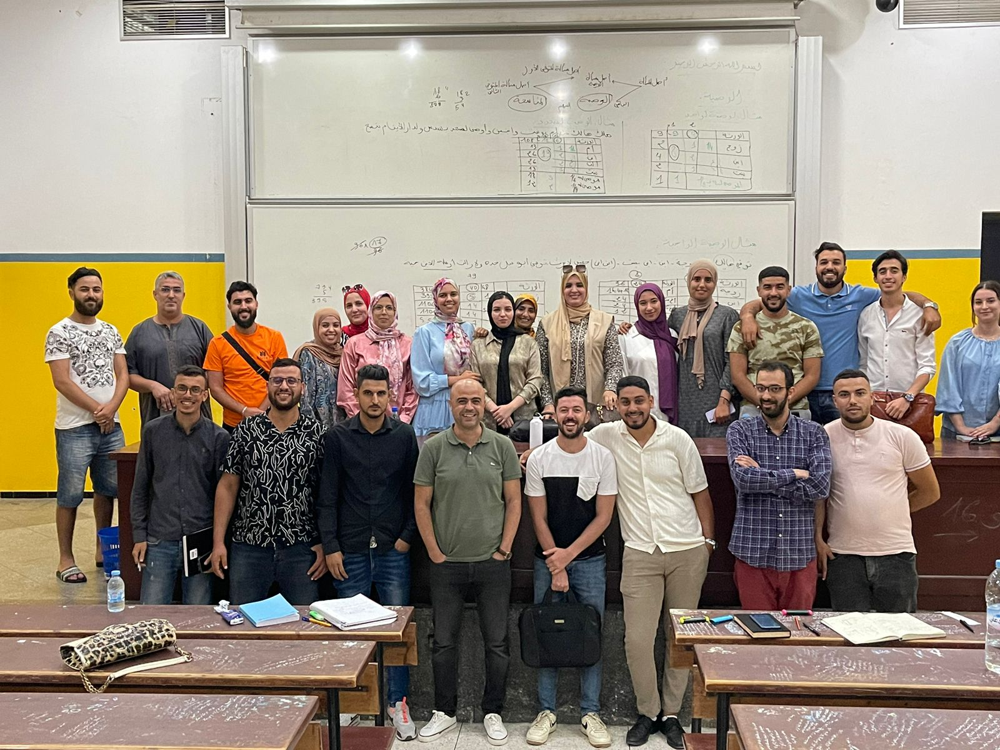

الإنتاج العلمي والبيداغوجي للدكتورة عائشة الطويل



بكلية العلوم القانونية والاقتصادية والاجتماعية.
سلك الماستر: الدراسات العقارية
السداسي الثاني، الموسم الجامعي 2022/2023
نبذة عن العمل
تفي إطار التكوين بسلك الماستر، قمت بتدريس وحدة "أحكام التركات والمواريث والوصايا والتنزيل"، وهي وحدة متخصصة تهدف إلى تمكين الطلبة من الإحاطة بالنظام الإسلامي في توزيع التركات، واستيعاب القواعد الفقهية والضوابط القانونية المنظمة للمواريث والوصايا، مع تنمية قدرتهم على معالجة النوازل والقضايا التطبيقية ذات الصلة.
وقد حرصت من خلال هذه الوحدة على الجمع بين التأصيل الفقهي، واستحضار المقاصد الشرعية، وربط الأحكام النظرية بالتطبيقات العملية، بما يعزز لدى الطلبة مهارات التحليل والاستنباط، ويؤهلهم للتعامل مع القضايا المعاصرة في مجال التركات وفق منهج علمي رصين.
أهداف الوحدةتسهم هذه الوحدة في إعداد طلبة يمتلكون كفاءة علمية في مجال أحكام التركات والمواريث، وقادرين على معالجة المسائل الإرثية وفق أصول الفقه الإسلامي، مع استحضار المقاصد الشرعية ومتطلبات الواقع، بما يؤهلهم للبحث الأكاديمي والإسهام في خدمة المجتمع من خلال نشر الوعي بأحكام المواريث وحماية الحقوق المالية للأفراد.